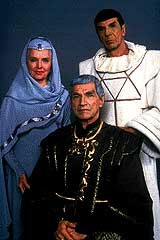
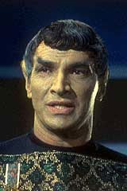
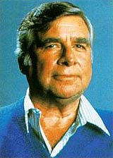
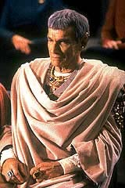
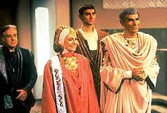
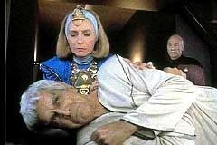

|
por
Fernando Penteriche
Fiquei sabendo, atravs da revista SET em
1992 ou 1993 (se no me engano), que a CIC Vdeo estaria lanando
no mercado nacional uma fita com o episdio duplo da Nova Gerao,
"Unification", em que apareceriam Spock e Sarek
junto com Picard & cia.
Enfim a chance de assistir um episdio super-recente da Nova
Gerao, legendado, e ainda com a participao de Leonard
Nimoy, como Spock! S de pensar que eu veria a nova (na poca)
abertura da srie, com planetas mais detalhados, e tudo mais que
aquele episdio tinha a oferecer, eu fiquei muito ansioso para
consegui-lo logo. Afinal, eu, na poca com 16 ou 17 anos, nunca
havia visto nada de Nova Gerao alm da primeira
temporada, e lido os quadrinhos que a Abril lanou no final de
1991 (e que duraram at meados de 1992).
 J
tinha tudo preparado. Um amigo me emprestaria o seu vdeo para
fazer uma cpia quando eu alugasse a to sonhada fita. Comecei
ento o que chamei na poca de "The Search for Spock".
Morava (e ainda moro) em So Bernardo do Campo, na Grande So
Paulo. E So Bernardo uma cidade grande, muito grande.
"Existem muitas vdeo-locadoras", pensei. Se no
achasse nas locadoras perto de casa procuraria nos bairros prximos,
no seria difcil.
Mas foi. Foi muito difcil. Passei cerca de trs meses atrs da
tal fita. Simplesmente nenhuma vdeo-locadora tinha. E nem sabiam
do que se tratava. Ser que a CIC voltou atrs e no lanou?
Como no achei mesmo, para diminuir a frustrao da procura intil,
adotei esta tese: a CIC teria voltado atrs e no havia lanado
fita alguma.
Em 1994, o impossvel aconteceu. Em um shopping de Santo Andr,
descobri uma locadora que tinha a fita! Voltei para casa no nibus
pensando em voltar a Santo Andr, ficar scio da locadora,
alugar a fita, copiar em casa, voltar a Santo Andr e devolver a
fita no dia seguinte. Seria complicado, pois na poca eu no
tinha carro nem carta de motorista. Tambm no tinha mais quem
me emprestasse um videocassete para a viabilizao da cpia. E
ir a outra cidade para ficar scio de uma locadora, alugar uma
fita e depois, no dia seguinte, voltar mesma cidade apenas para
devolv-la me pareceu meio cansativo... Resumindo, encontrei a
fita no local errado, no momento errado. Acabei desistindo.
Anos mais tarde, em 1997, acabei encontrando a fita do "Unification"
para venda em um sebo de fitas usadas. E comprei, claro. Vi o episdio
pela primeira vez e adorei.
O tempo passa e no ms passado em um evento de Jornada que
ocorreu na mesma cidade de Santo Andr, conversando com um amigo
f de longa data, fiquei sabendo que ele tambm procurou pela
fita em sua cidade, Ribeiro Pires (SP) e a achou apenas na mesma
locadora que encontrei, em Santo Andr. O mais incrvel que
ele fez o que eu no tive a pacincia de executar. Saiu de
Ribeiro Pires e foi at Santo Andr, ficou scio da locadora,
alugou a fita, assistiu e a devolveu no dia seguinte. Claro, ele
tinha um carro disponvel para a faanha, o que sem dvida me
ajudaria muito na poca.
E h uns dois anos a prpria CIC Vdeo relanou esta fita no
mercado de venda direta, e de bnus veio o episdio "Sarek",
alm do "Unification". E foi com esse episdio
que os produtores da Nova Gerao resolveram abrir as
portas do passado, e comear a trazer de volta os cones da Srie
Clssica de Jornada.
 A
Nova Gerao comeava a encontrar seu caminho durante a
terceira temporada (1990), e os produtores acharam que seria
suficientemente seguro dar uma grande passo reintroduzindo o pai
de Spock, Sarek (novamente interpretado por Mark Lenard, falecido
em 1996) na mitologia da srie.
Seria um passo importante para que a Nova Gerao se
firmasse ainda mais, mesmo com um uma bomba durante as filmagens
de "The Most Toys", o episdio imediatamente
anterior ao da apario de Mark Lenard: no terceiro dia das
filmagens deste episdio, o ator convidado Michael Rappaport
tentou o suicdio, porm sem sucesso, e foi parar no hospital.
Isso abalou o restante da equipe de produo. Rappaport, que
faria o personagem Kivas Fajo foi substitudo por Saul Rubinek. E
Rappaport acabaria morrendo meses depois, em uma nova tentativa de
sucidio, desta vez com xito.
Mark Lenard reapareceria como Sarek em um episdio que leva o prprio
nome do pai de Spock. De acordo com Michael Piller, a histria
original seria focada em um embaixador da Federao com alguma
doena que afetava a mente, impedindo-o de exercer suas funes.
Ento a equipe de escritores teve a idia de substituir este
embaixador genrico do sculo 24 por Sarek, com uma doena
Vulcana que afeta os idosos, fazendo-os perder o controle de suas
emoes e de sua racionalidade.
Porm, graas a Gene Roddenberry, um grande debate interno
ocorreu. Gene no queria, de maneira alguma, que o nome "Spock"
fosse includo no roteiro.
 Gene
sempre quis que a Nova Gerao seguisse um rumo prprio,
e durante a primeira e segunda temporadas os produtores evitaram
menes Srie Clssica de Jornada, com a exceo
do nome do capito Kirk, lido por Riker no episdio "The
Naked Now", da primeira temporada --sendo que o episdio
em si era uma refilmagem de um segmento da srie anterior--, e,
claro, da apario do almirante McCoy no episdio-piloto da srie.
Na verdade, Sarek deveria aparecer no episdio "Yesterday's
Enterprise", mas o roteiro foi reescrito e ele foi
retirado.
Michael Piller concordava com esse diretriz de independncia. A
estratgia "era muito, muito esperta", segundo ele.
" o que tnhamos que fazer para que a srie se
sustentasse independentemente do passado de Jornada."
"Fomos forado a ser originais", prossegue Piller.
"Ns fomos forados a criar novas solues, novas formas
de contar histrias, e aps provarmos a ns mesmos e ao mundo
que tnhamos nossa prpria Jornada, poderamos
experimentar novas coisas."
Quase ao final da terceira temporada, a Nova Gerao
estava caminhando para conseguir aquilo que os produtores
desejavam. E junto com a deciso de basear um episdio inteiro
no personagem de Sarek, vinha a dvida: era a melhor hora de
abrir as portas da histria de Jornada, e colocar as duas
geraes na mesma tela e ainda mencionar um cone da srie
original, Spock?
A deciso final foi positiva. No episdio, Picard menciona que
serviu na guarda do casamento do "filho de Sarek".
Segundo Michael Piller, "a meno de Spock foi decisiva e
nos permitiu abrir as portas do passado e comear a abra-lo".
E esse era um sinal que Roddenberry estava comeando a perder o
comando da srie.
 "Naquela
poca, Gene estava declinando", diz Piller. "Ele no
estava incomunicvel, mas estava claro que ele no era mais o
mesmo homem que costumava ser, devido idade e o que isso
acarretava. Todos ns ainda o respeitvamos muito, ele era
importante, um grande lder na histria do franchise de Jornada,
o criador. Mas assim como acontecer com todos, ele j estava
caminhando para o fim da vida, ele estava em declnio, e eu
rapidamente percebi uma estreita conexo com a premissa do episdio
'Sarek'. Um grande homem, no final da vida, com todos os
problemas que cercam esse perodo. Se voc olhar para trs e
analisar 'Sarek' atentamente, ver que o personagem de
Mark Lenard na verdade era Gene."
Para quem no se lembra ou no viu, em "Sarek",
o renomado embaixador Vulcano Sarek tem uma nova misso diplomtica,
provavelmente a ltima de sua extensa carreira: o estabelecimento
de relaes entre a Federao e os Legarans. Porm, a bordo
da Enterprise-D, Sarek apresenta indcios de que est com a sndrome
Bendii, uma espcie de mal de Alzheimer Vulcano, que faz com que
Vulcanos idosos percam o controle emocional.
 Picard
se oferece para fazer uma unio de mentes com o Vulcano, passando
assim a ele um pouco de auto-controle, e recebendo em troca as emoes
descontroladas de Sarek, por algumas horas. Com a ajuda da dra.
Crusher, Picard consegue suportar (a duras custas) as memrias de
Sarek --uma vida de emoes reprimidas--, e o embaixador
consegue completar a misso.
Aps esse episdio, os fs se indagavam se um dia veriam Sarek
novamente na Nova Gerao. Aps a estria do sexto
filme de cinema com os tripulantes originais, que contava com a
presena do embaixador Vulcano, todos ganhariam um presente com o
episdio duplo "Unification".
 Alm
de ter uma histria relacionada com o novo filme, o que faria com
que a ansiedade dos fs para ver logo a misso final de Kirk
& cia. na tela grande aumentasse ainda mais, o episdio
trazia como elo de ligao entre o filme e a Nova Gerao
o personagem de Spock, com o bnus da ltima participao de
Sarek na saga de Jornada nas Estrelas.
|